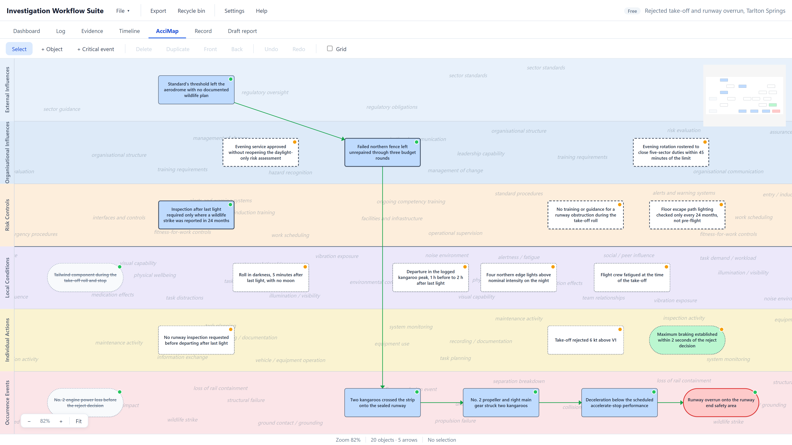
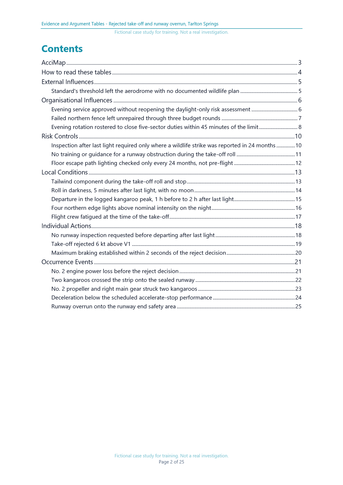
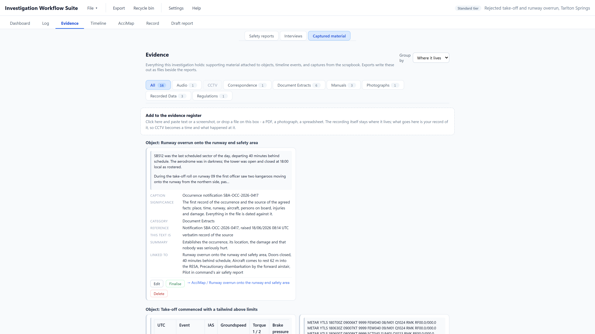
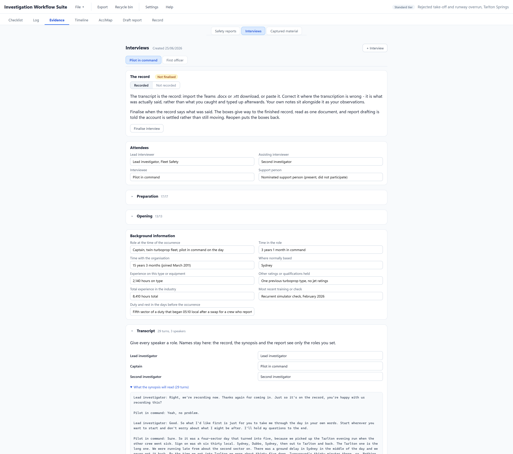
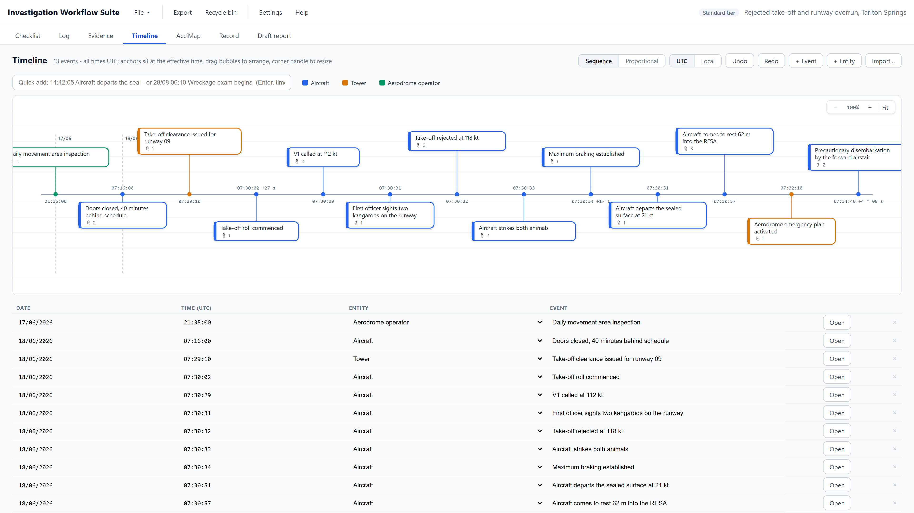
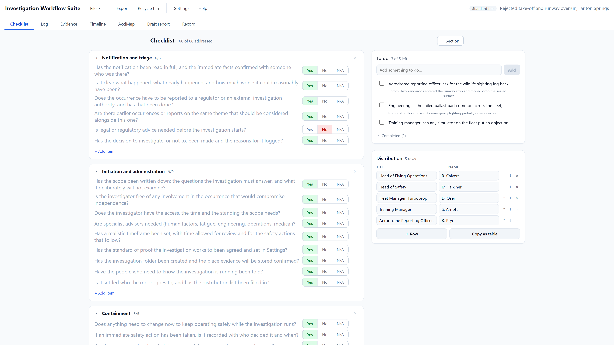
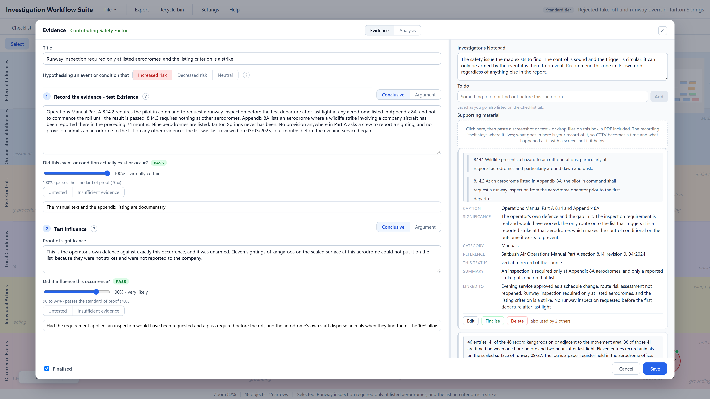
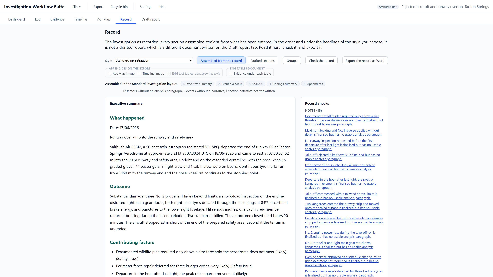
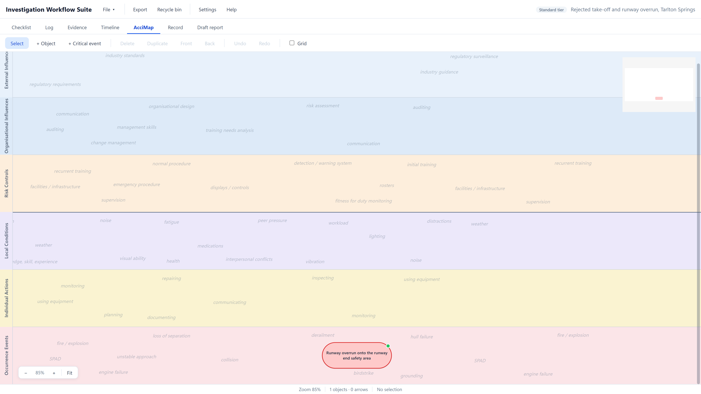
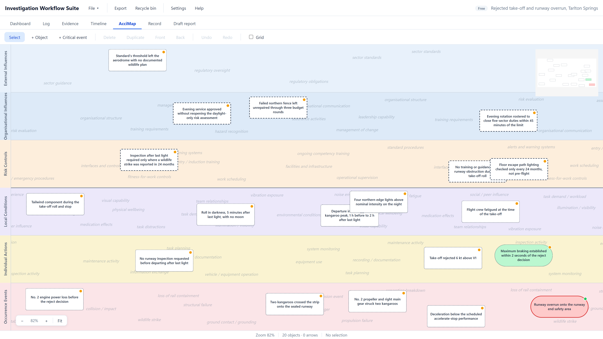

Investigation Workflow Suite (IWS)
One connected workspace for the investigation, from first notification to final report.
One investigation record: the checklist, the evidence, the interviews, the timeline, the map, the tests and the report, in one file. IWS is safety investigation software for Windows, and everything below lives in that record.

The reasoning behind every finding, set out where a reviewer can read it
Every factor on the map is tested three times: did it exist, did it influence the outcome, and did it matter. For each test the investigator records the argument for, the argument against and the reasoning, all judged against the factor exactly as it is worded. The result and its confidence are stated on the probability scale.
The Evidence and Argument Tables gather that into one table per factor. A reviewer, a regulator or a court can follow how each conclusion was reached, and every argument stays connected to the evidence it rests on.
The tables are part of Free and export as a document. Read the Tarlton Springs tables.

One file that holds the whole investigation, and a report that is a view of it
The investigation is held in one portable file on the drive you choose. It can be archived with the investigation and read independently of IWS. The underlying file is human-readable JSON.
Checklist
What the investigation should cover, what is outstanding, and who the report goes to.
Evidence
Every capture filed once, with what rests on it, and people identified by role.
Interviews
Each account written up and finalised, so the analysis works from a settled version.
Timeline
The sequence of events, each with its source and its time basis.
Causal map
Every hypothesis as an object on organisational lanes, tested and connected.
Findings
Derived from the tests rather than asserted, each carrying its confidence.
Log
The investigation's own decisions, written as the work moves rather than afterwards.
Reports
Assembled or drafted from all of the above, in whichever style is required.






Everything in the report traces to something recorded
A finding is derived from the tests on an object, and the evidence behind it exports as a table. The report is built from information held in the investigation record, preserving the trail back to its source.
The direction of the investigation in one image
The map shows every line of enquiry and its state: proven, argued, closed, or not yet looked at.
Confidence stated, standard of proof chosen
Every verdict carries a confidence on the probability scale, and the standard a passed test must reach is set once for the investigation. The methodology explains both.
Several reports from one record
A preliminary update while the work runs and the full report at the end, both from the same file.
Readable independently of IWS
One portable file, with no account and no database behind it. The file is human-readable JSON, so a text editor is enough to read it back.
Shared-folder conflict protection
A save that would overwrite a change made on another machine is held for a decision. A lock file beside the open file warns the other investigator, and every resolution is whole-file: keep theirs, save yours as a copy, or save yours over theirs.
Collecting and examining evidence is not a straight line, so the workflow does not pretend it is
Evidence arrives when it arrives. A recorder download lands a week in, an interview changes what an earlier statement meant, a maintenance record turns up after the analysis looked settled. The investigation has to stay flexible as new information comes in.
The work runs in rounds, and each round works on the same record:
- New material is recorded once, with its source.
- It is linked to the events, conditions and hypotheses it bears on.
- The emerging picture on the map is tested against it.
- The gaps it exposes become requests for more information.
- When more comes in, the objects it touches are retested and the analysis moves with it.
The report is drawn off when the picture holds, and it stays a view of the record. Change the record and the drafts built on the old version are marked out of date.
One to-do list and one evidence store for the whole investigation. A to-do written on an object's form is the same list the Checklist tab shows, with a jump back to the object it came from, so what is outstanding is visible at any point.


Several reports, and the working behind them, from the one record
A report style is a set of headings with guidance for each, and the record is assembled or drafted under them. Every report is written to a Word template, with your organisation's layout where a custom template has been supplied. Finished reports and custom templates are part of Professional; the Evidence and Argument Tables, the map images and the collated record export in Free as well.
Preliminary update
Issued while the investigation runs: what has been established, the risk exposure, the open lines of enquiry. No findings.
Standard investigation report
The full report: executive summary, event overview, analysis, findings summary and appendices.
Executive brief
The occurrence, the findings and the actions on a few pages for the people who decide.
Final report
Modelled on the structure of published safety investigation final reports: summary, occurrence, context, safety analysis, findings, safety issues and actions.
Probable-cause report
Factual information, analysis, conclusions carrying the findings, the probable cause and the contributing factors, then recommendations.
Causal and contributory factors report
Synopsis, factual information, analysis, conclusions splitting causal from contributory factors, then safety action and recommendations.
Your organisation's own
A style written to your report template, with your headings, cover and findings tables, configured at the Organisation level.
Evidence and Argument Tables
One table per object: each test, its confidence, the evidence for and against, and the reasoning. Read the tables.

The map, the timeline and the record
The causal map and the timeline as images, a collated copy of the whole investigation, and the investigation file itself, readable without the application.

The reports drawn from it
Each style, written to the Word template. Read the Tarlton Springs report.
The reasoning stays with the organisation
When an investigation closes, the evidence, the tests, the reasoning and the reports stay together in one file the organisation holds. The next investigator, reviewer or safety manager can read the working for themselves.
- Your own framework. At the Organisation level, IWS is configured around your framework, terminology, checklists, Human Factors taxonomy, report structures and templates where practicable, with the application underneath unchanged.
- Your own Word templates. In Professional, reports are written to your template, with your cover and layout.
- Your own checklist. The checklist template is plain text in Settings, so every new investigation starts from your version.
- Your standard of proof. Set per investigation, and the form warns when a passed test falls short of it.
- Local first. The file lives on the drive you choose. The application sends no telemetry, and its only service of its own is licensing, which never sees an investigation.

How the reasoning works
Evidence, propositions, the three tests, the standard of proof and the probability scale: how IWS turns an investigation's evidence into findings it can defend.